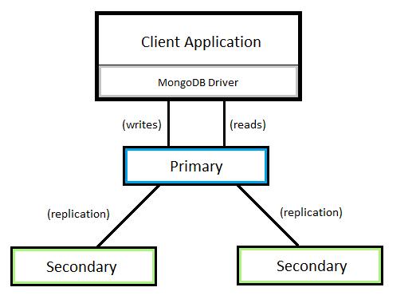

Creating a Replica Set¶
A Brief Introduction¶
This tutorial will describe how to setup a MongoDB replica set with three members. While it is possible to have more members in a replica set, it is recommended to always have an odd number of members. An odd number of members ensures that the election of a “PRIMARY” member goes smoothly. More can be read about replica sets from the MongoDB documentation at https://docs.mongodb.com/manual/tutorial/deploy-replica-set/ and https://docs.mongodb.com/manual/replication/.
Note
Remember to backup any files that are modified, such as the MongoDB configuration, in case something goes wrong.
The MongoDB Binaries¶
You will need to download the MongoDB binaries. Even if you’re setting up a replica set from an existing Deadline database installation, the other members of the replica set will need have clean MongoDB installations. The MongoDB binaries can be downloaded from https://www.mongodb.com/download-center#community. You will need to select the platform and click “All Version Binaries” to download the appropriate binary package. For maximum compatibility with Deadline, we recommend you use MongoDB version 5.0.0 through 6.0.16. However, for security, you may need to use a later patch version for 6.0.16 if 6.0.16 has any security issues that might affect you.
For the purposes of this tutorial, the following file structure will be assumed for all MongoDB installations. To be ready for the next few steps it may be best to install the MongoDB binaries on all replica set members, with the following structure. If you’re creating a replica set from an existing Deadline database, the installed database already has the MongoDB binaries installed with this structure.
<databaseDirectory>/ mongo/ application/ <downloadedBinaries> data/ config.conf logs/Note
<databaseDirectory>is an arbitrary installation directory. This can be specified when installing the Deadline database, or chosen individually when downloading the MongoDB binaries.Note
<downloadedBinaries>represents all files downloaded with the binary package. The Deadline database installer downloads these for you.Note
config.confis a configuration file. The Deadline database installer creates this for you.Note
The
logs/directory stores log files, and will need to be created manually. The Deadline database installer creates this for you.
The MongoDB Configuration¶
The MongoDB configuration is a file that specifies options for running an instance of MongoDB. Depending on what you’re creating a replica set for, the configuration may vary. If you’re using an existing Deadline database, you can start from the provided configuration located at <databaseDirectory>/mongo/data/config.conf. Otherwise, you’ll need to create a configuration from scratch. Information on MongoDB configuration options can be found at https://docs.mongodb.com/v3.2/reference/configuration-options/. The indentation style in the configuration file matters. To be safe, use two spaces for each level of indentation. The provided examples follow this standard.
Note
Your configuration should be saved as config.conf in the data/ directory (as shown in The MongoDB Binaries).
It is assumed that all MongoDB instances are listening on Mongo DB port 27100 which will be referred to as <DB_PORT>. This requires the following in your configuration. The Deadline MongoDB configuration already includes this.
net: port: <DB_PORT>
The MongoDB configuration should also specify a storage directory. This requires the following in your configuration. The Deadline MongoDB configuration already includes this.
storage: dbPath: <databaseDirectory>/mongo/data
For any MongoDB replica set, you need to specify the following.
replication: replSetName: <replicaSetName>Note
<replicaSetName>is the name of your replica set.
For shard replica sets, use something like
dlshard0ordlshard1.For a shard config replica set, use something like
dlconfig.For a simple standalone replica set, use something like
dlreplica.
If you’re creating a shard cluster, you’ll need several shard replica sets and a single shard config replica set.
For shard replica sets, use the following.
sharding: clusterRole: shardsvrFor a shard config replica set, use the following instead.
sharding: clusterRole: configsvr
Note
The MongoDB configuration you create or modify is going to be used across all members of your replica set. Copy the configuration to the data/ directory for all replica set members.
Note
If you’re creating a shard cluster, the same MongoDB configuration will be used for all shard replica sets in the shard cluster. A different configuration file is needed for the shard config replica set than for the shard replica sets.
Start the MongoDB Instances¶
At this point you should have MongoDB installed with a configuration file on all replica set members. The next step is going to be starting your MongoDB instances with your configuration.
If you’re creating a replica set from an existing Deadline database, you’ll need to restart the Deadline database service. When the service is restarted, the modified configuration will be used.
On Linux, the Deadline MongoDB service can be restarted by running
sudo service Deadline<VERSION>db restart.On Windows, services can be stopped and started from the Task Manager or from the Services application. The service on Windows is named “Deadline <VERSION> Database Service”.
Note
<VERSION>is the Deadline major version such as:10.
Other replica set members using clean MongoDB installations will need to be started manually. Make sure that file paths in the MongoDB configuration are set correctly. More specifically, ensure that <databaseDirectory> is set correctly.
Navigate to
<databaseDirectory>/application/bin/.Run
./mongod --config <databaseDirectory>/mongo/data/config.conf.Note
To run MongoDB as a Windows service, use the
--installflag when runningmongod. More information at https://docs.mongodb.com/manual/tutorial/install-mongodb-on-windows/#install-the-mongodb-service.
Initiate the Replica Set¶
Now that you have your MongoDB instances running and properly configured, the next step is to initiate the replica set. This is done through the MongoDB shell application mongo.
Navigate to
<databaseDirectory>/mongo/application/bin/on any replica set member.Run
./mongo --host localhost --port <DB_PORT>to connect to the local MongoDB instance.In the MongoDB shell, use
rs.initiate()to initiate a new replica set. Here’s an example of how the command may look:> rs.initiate( ... { ... _id: "<replicaSetName>", ... members: [ ... { _id: 0, host: "<hostname1>:<DB_PORT>" }, ... { _id: 1, host: "<hostname2>:<DB_PORT>" }, ... { _id: 2, host: "<hostname3>:<DB_PORT>" } ... ] ... } ... )Note
The command above was entered on multiple lines in the MongoDB shell. The shell will prefix each line with
...if the command has not yet been closed (which happens here on the final)).Note
<replicaSetName>is the name of your replica set, as specified in the configuration file used for all themembers.Note
<hostname1>,<hostname2>, and<hostname3>should be names or IP addresses of the MongoDB instances in your replica set. Do not use127.0.0.1orlocalhost.Note
<DB_PORT>is the Mongo DB port, such as:27100.If you’re creating a shard config replica set, you will also need to add the
configsvr: trueproperty to thers.initiate()command. The initiation of the config replica set may look something like:> rs.initiate( ... { ... _id: "dlconfig", ... configsvr: true, ... members: [ ... { _id: 0, host: "10.0.0.25:<DB_PORT>" }, ... { _id: 1, host: "10.0.0.26:<DB_PORT>" }, ... { _id: 2, host: "10.0.0.27:<DB_PORT>" } ... ] ... } ... )
Your Replica Set is Ready¶
That’s all there is to it. The steps followed in this tutorial took you through installing MongoDB binaries, preparing a configuration file for MongoDB instances, running the MongoDB instances with that configuration, and finally initiating a replica set from the running MongoDB instances. The final result is a running MongoDB replica set.
If you created a replica set from an existing Deadline database, and aren’t creating a shard cluster, you may need to update the database connection information in your repository to communicate with the replica set (as opposed to a standalone MongoDB instance). This can be done from a machine that has access to the repository and installed Deadline client applications, specifically Deadline Command.
Navigate to the
bin/directory in your Deadline client installation directory.Run the following command to update your connection settings.
./deadlinecommand UpdateDatabaseSettings <repositoryPath> MongoDB <databaseHostname> deadline<VERSION>db <DB_PORT> -1 False False "" "" <replicaSetName> FalseNote
<repositoryPath>is the path to the root directory of your repository.Note
<databaseHostname>is the hostname or IP address of any member of your replica set.Note
<VERSION>is the Deadline major version such as:10.Note
<DB_PORT>is the Mongo DB port, such as:27100.Note
<replicaSetName>is the name of your replica set, as specified inrs.initiate()and the replica set member configuration file.
Your Deadline applications will now take advantage of MongoDB replica sets.
Application Read Preference¶
In a direct connection setup, by default, all Deadline applications read from the primary member in the replica set. You can change this setting to allow certain Deadline applications to read from secondary members first. For example, Monitor is the best Deadline application that can benefit from this setting given that Monitors generates lots of read operations and Monitor can tolerate delayed read updates. To do that, you can add the following configuration into the database connection configuration file.
ClientsThatPreferSecondaryReplicas=Monitor
You can also specify multiple Deadline applications by separating the names by comma as shown below.
ClientsThatPreferSecondaryReplicas=Monitor, Launcher
Valid values are Monitor, Launcher, Worker and Pulse. In most of the cases, Monitor will be the most useful option given that Monitor generates lots of read operations.
The database connection file can be found in the repository directory as shown below.
<repositoryDirectory>/settings/connection.ini
To confirm the actual option is applied to the Deadline application, you can find logs similar to the following ones in the log of the application.
2021-09-20 16:27:42: Checking if `monitor` is in list (Monitor)
2021-09-20 16:27:42: Replica Set Read Preference={ Mode : SecondaryPreferred }